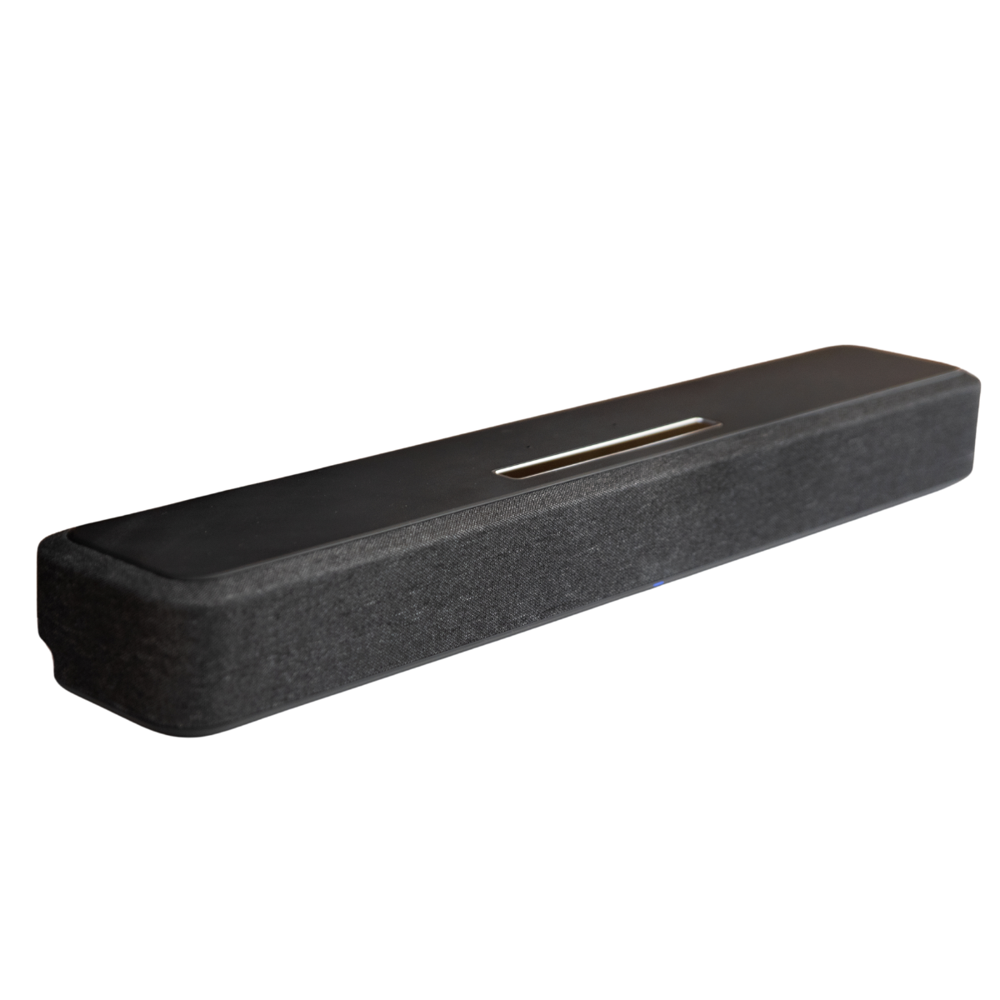
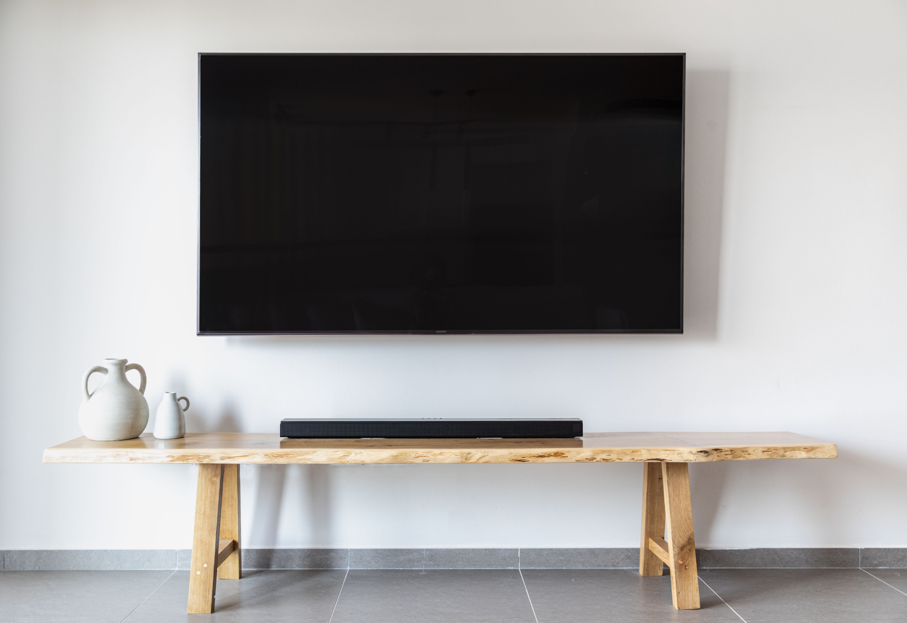

Television Soundbar
SoundBar Model S24
A 100-watt 2.1-channel TV soundbar with Bluetooth, HDMI ARC and three selectable sound modes for everyday television audio.
- 100 W total output power
- Bluetooth and HDMI ARC connectivity
- Movie, Music and Voice sound modes
TV Audio

SoundBar TV SoundbarModel S24
Designed for television audio
Clear everyday sound with wired and wireless connectivity
SonicRidge SoundBar S24 is a 2.1-channel television soundbar with a total output power of 100 watts.
The soundbar provides HDMI ARC, optical audio and Bluetooth 5.2 connections. Its built-in subwoofer supports lower-frequency effects without requiring a separate speaker enclosure.
Movie, Music and Voice sound modes adjust the sound profile for different television programmes and wireless audio sources.
Product highlights
Flexible audio options for television and music
SoundBar S24 combines 100-watt output, Bluetooth, HDMI ARC and three sound modes in a compact enclosure.
100 W total output power
The soundbar provides a combined rated output of 100 watts across its speaker system.
Bluetooth 5.2
Stream compatible wireless audio from smartphones, tablets and computers.
HDMI ARC
Connect a compatible television using one HDMI cable.
Three sound modes
Select Movie, Music or Voice mode to suit the content.
Built-in subwoofer
The integrated subwoofer supports lower-frequency sound without a separate enclosure.

Designed for home entertainment
Connect to a television or stream audio wirelessly
Place the soundbar beneath the television, connect it using HDMI ARC or optical audio and select the preferred sound mode.
- Single-cable television connection
HDMI ARC carries compatible television audio to the soundbar.
- Wireless playback
Bluetooth supports audio streaming from compatible devices.
- Content-based sound modes
Select Movie, Music or Voice mode using the remote control.
Key product information
100 W total output power
SoundBar S24 provides a combined rated audio output of 100 watts across its 2.1-channel speaker system.
Output power100 WTotal rated output
Product details
Product Specifications
Audio and connectivity information for SonicRidge SoundBar S24.
| Product name | SoundBar |
|---|---|
| Model | S24 |
| Product category | Television soundbar |
| Total output power | 100 W |
| Audio channels | 2.1 channels |
| Subwoofer | Built-in subwoofer |
| Bluetooth version | Bluetooth 5.2 |
| HDMI connection | HDMI ARC |
| Optical input | Supported |
| Sound modes | Movie, Music and Voice |
| Soundbar width | 900 mm |
| Warranty | 2 years |
| Country of manufacture | United Kingdom |
| Product code | SR-S24-2026 |
Connection guidance
How to connect SoundBar S24
Follow these steps when positioning and connecting the soundbar.
- 1
Position the soundbar
Place the soundbar on a stable surface beneath the television.
- 2
Connect the television
Use HDMI ARC or optical audio to connect a compatible television.
- 3
Select the input
Choose HDMI ARC, optical or Bluetooth using the remote control.
- 4
Select a sound mode
Choose Movie, Music or Voice mode for the current content.
Important information
Safety and Care
Follow these precautions when installing and operating SoundBar S24.
Use a stable surface
- Keep the soundbar level and stable.
- Do not cover the ventilation openings.
- Keep the unit away from water and high humidity.
- Use only the supplied power adapter.
Use a suitable volume level
- Begin playback at a low volume.
- Avoid prolonged listening at high volume.
- Keep cables away from walkways.
- Disconnect power during electrical storms.
Disconnect before cleaning
Unplug the soundbar and clean the exterior with a soft, dry cloth. Do not apply liquid directly to the enclosure.
Questions and Answers
Frequently Asked Questions
Find answers about SoundBar S24, including output power, connections, sound modes and installation.
Q What is the output power of SoundBar S24?
A
SoundBar S24 provides 100 watts of total output power.
Q How many audio channels are provided?
A
SoundBar S24 uses a 2.1-channel speaker configuration.
Q Does SoundBar S24 support Bluetooth?
A
Yes. It supports Bluetooth 5.2.
Q Can the soundbar connect through HDMI ARC?
A
Yes. HDMI ARC is supported.
Q Which sound modes are available?
A
The available modes are Movie, Music and Voice.
Q Is an optical input provided?
A
Yes. An optical audio input is provided.
Q Where is SoundBar S24 manufactured?
A
SoundBar S24 is manufactured in the United Kingdom.